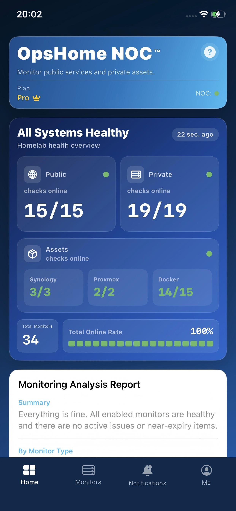

OpsHome NOC™
The native iOS monitoring hub for homelab — public uptime checks and private network visibility via Docker Probe, no port exposure required. 专为 homelab 打造的原生 iOS 监控中枢。公网检测 + Docker Probe 内网监控，无需暴露任何端口。 專為 homelab 打造的原生 iOS 監控中樞。公網檢測 + Docker Probe 內網監控，無需暴露任何連接埠。
// PRODUCT PREVIEW
// ENGINEERING STANDARD
Built by a senior network & systems engineer with 15 years of hands-on experience.由拥有 15 年一线经验的资深网络与系统工程师打造。由擁有 15 年一線經驗的資深網路與系統工程師打造。
OpsHome NOC brings real enterprise-grade engineering practices into personal homelab monitoring, from Proxmox and TrueNAS environments to Docker, NAS, and private services. It is designed, developed, and maintained by an independent developer who built it after getting tired of clunky mobile monitoring tools in a real homelab.OpsHome NOC 将真实企业级工程实践带入个人 Homelab 监控场景，从 Proxmox、TrueNAS 环境，到 Docker、NAS 与私有服务。它由独立开发者设计、开发和维护，起点很直接：我在自己的 Homelab 里受够了笨重难用的移动监控工具。OpsHome NOC 將真實企業級工程實踐帶入個人 Homelab 監控場景，從 Proxmox、TrueNAS 環境，到 Docker、NAS 與私有服務。它由獨立開發者設計、開發和維護，起點很直接：我在自己的 Homelab 裡受夠了笨重難用的行動監控工具。
// HOW IT WORKS
How OpsHome NOC WorksOpsHome NOC 是如何工作的OpsHome NOC 是如何運作的
OpsHome NOC is not a standalone app — it's a complete SaaS service built on three components working together.OpsHome NOC 不是单机 App，而是由三个部分协同工作的完整 SaaS 服务。OpsHome NOC 不是單機 App，而是由三個部分協同運作的完整 SaaS 服務。
iPhone AppiPhone AppiPhone App
Your control center. Displays real-time data, topology maps, asset views, and delivers push alerts.你的控制中心。负责显示实时数据、拓扑图、资产视图和接收告警推送。你的控制中心。負責顯示即時數據、拓撲圖、資產視圖和接收告警推播。
OpsHome CloudOpsHome CloudOpsHome Cloud
The SaaS backbone. Handles data storage, topology generation, alert delivery, and status pages.云端 SaaS 服务。负责数据存储、拓扑图生成、告警推送和状态页。雲端 SaaS 服務。負責數據存儲、拓撲圖生成、告警推播和狀態頁。
Docker ProbeDocker ProbeDocker Probe
A lightweight agent you deploy inside your home network. Collects private service status and sends it to the cloud — zero port forwarding required.你部署在内网的轻量探针。采集私有服务状态并安全发送至云端，无需暴露任何端口。你部署在內網的輕量探針。採集私有服務狀態並安全傳送至雲端，無需暴露任何連接埠。
Through Docker Probe, your iPhone sees your entire homelab in real time — without exposing a single internal port.通过 Docker Probe，你的 iPhone 可以实时看到整个 homelab 的状态，完全不暴露任何内网端口。透過 Docker Probe，你的 iPhone 可以即時看到整個 homelab 的狀態，完全不暴露任何內網連接埠。
// FEATURES
The iPhone-first control room for your homelab.属于 Homelab 的 iPhone 优先控制室。屬於 Homelab 的 iPhone 優先控制室。
OpsHome NOC focuses on public monitoring, private network visibility, infrastructure integrations, and clear status sharing for NAS, Docker, homelab, and small production endpoints.聚焦公网监控、私有网络可见性、基础设施集成和清晰的状态共享，覆盖 NAS、Docker、Homelab 和小型生产端点。聚焦公網監控、私有網路可見性、基礎設施整合和清晰的狀態分享，覆蓋 NAS、Docker、Homelab 和小型生產端點。
// PRIVATE NETWORK// 私有网络// 私有網路
Private Monitoring私有网络监控私有網路監控
Monitor NAS panels, Docker services, and internal HTTP/HTTPS/TCP targets without opening your home network.无需开放家庭网络端口，即可监控 NAS 面板、Docker 服务和内网 HTTP/HTTPS/TCP 目标。無需開放家庭網路連接埠，即可監控 NAS 面板、Docker 服務和內網 HTTP/HTTPS/TCP 目標。
Infrastructure Assets基础设施资产基礎設施資產
Synology NAS, Docker containers, and Proxmox VE — CPU, memory, disk I/O, temperature, and container health without exposing management interfaces.Synology NAS、Docker 容器和 Proxmox VE 的 CPU、内存、磁盘 I/O、温度和容器健康，无需暴露管理界面。Synology NAS、Docker 容器和 Proxmox VE 的 CPU、記憶體、磁碟 I/O、溫度和容器健康，無需暴露管理介面。
Topology Map拓扑地图拓撲地圖
A visual Cloud to Private Networks map shows where each service lives and how it is monitored.Cloud 到 Private Networks 的可视化拓扑，让服务位置和监控来源一目了然。Cloud 到 Private Networks 的可視化拓撲，讓服務位置和監控來源一目了然。
// PUBLIC MONITORS// 公网监测// 公網監測
Monitor Workspace监控工作区監控工作區
All, Dock, Map, and Tags views separate public checks from private network monitoring.All、Dock、Map、Tags 视图清晰区分公网检测和私有网络监控。All、Dock、Map、Tags 視圖清晰區分公網檢測和私有網路監控。
Alerts & Analysis告警与分析告警與分析
Push alerts, Telegram, incident history, uptime blocks, SSL/domain risk, and readable analysis help you act fast.推送告警、Telegram、事件历史、在线率色块、SSL/域名风险和易读分析，帮助你快速处置。推播告警、Telegram、事件歷史、在線率色塊、SSL/域名風險和易讀分析，幫助你快速處置。
// VISUALIZATION & SHARING// 可视化与分享// 可視化與分享
iOS WidgetsiOS 组件iOS 組件
Home screen and lock screen widgets keep your homelab status visible without opening the app.桌面和锁屏组件让 Homelab 状态不打开 App 也能快速扫一眼。桌面和鎖屏組件讓 Homelab 狀態不打開 App 也能快速掃一眼。
Status Pages公开状态页公開狀態頁
Share public service status with access codes, expiry windows, QR verification, and private-target masking.可分享公开状态页，支持访问口令、有效期、二维码验真和私有目标脱敏。可分享公開狀態頁，支援訪問口令、有效期、二維碼驗真和私有目標脫敏。
// MONITOR TYPES
Monitor types and plan access.监控类型和方案权限。監控類型和方案權限。
| Type类型類型 | Description说明說明 | FREE | PRO |
|---|---|---|---|
| Cloud Monitoring公网检测公網檢測 | |||
| HTTP | HTTP status-code detection and analysis hints.HTTP 状态码检测与分析提示。HTTP 狀態碼檢測與分析提示。 | ✓ | ✓ |
| HTTPS | HTTPS reachability and status-code detection.HTTPS 可达性与状态码检测。HTTPS 可達性與狀態碼檢測。 | ✓ | ✓ |
| TCP | Custom port connectivity without fixed port restrictions.自定义端口连通性检测，不限制固定端口。自訂連接埠連通性檢測，不限制固定連接埠。 | ✓ | ✓ |
| ICMP | Ping-style host reachability.类似 Ping 的主机可达性检测。類似 Ping 的主機可達性檢測。 | ✓ | ✓ |
| Security & Domain安全与域名安全與域名 | |||
| SSL | Certificate validity, CN, issuer, and hostname match checks.证书有效期、CN、颁发者和主机名匹配检测。證書有效期、CN、頒發者和主機名稱匹配檢測。 | ✓ | ✓ |
| DNS | DNS response checks and A/MX record validation.DNS 响应检测与 A/MX 记录校验。DNS 回應檢測與 A/MX 記錄校驗。 | — | ✓ |
| Domain域名域名 | Domain registration expiry monitoring.域名注册到期监测。域名註冊到期監測。 | — | ✓ |
| UDP | UDP response checks for supported payloads.对支持的载荷进行 UDP 响应检测。對支援的載荷進行 UDP 回應檢測。 | — | ✓ |
| Private Network私有网络私有網路 | |||
| Private Monitoring私有网络监控私有網路監控 | Private Docker, NAS, and internal HTTP/HTTPS/TCP checks without exposing inbound access.无需暴露入站访问，即可检测私有 Docker、NAS 和内网 HTTP/HTTPS/TCP 服务。無需暴露入站存取，即可檢測私有 Docker、NAS 和內網 HTTP/HTTPS/TCP 服務。 | — | ✓ |
// APP SCREENSHOTS
Built for the way homelab people actually check status.为 Homelab 用户真实查看状态的方式而设计。為 Homelab 使用者真實查看狀態的方式而設計。

Dashboard首页总览首頁總覽

Workspace监控工作区監控工作區

Topology Map拓扑地图拓撲地圖

Incident History事件历史事件歷史

Widgets桌面组件桌面組件
// PLANS
Start free. Upgrade when you need more.免费开始，需要更多时再升级。免費開始，需要更多時再升級。
Start free. No credit card required. Upgrade when you need more public monitors, private network monitoring, infrastructure integrations, and advanced visibility.免费开始，无需信用卡。需要更多公网监控、私有网络监控、基础设施集成和高级可见性时再升级。免費開始，無需信用卡。需要更多公網監控、私有網路監控、基礎設施整合和進階可見性時再升級。
FREE
Free免費免费
No subscription required.無需訂閱。无需订阅。
- 30 public monitor targets30 个公网监控目标30 個公網監控目標
- HTTP / HTTPS / TCP / SSL / ICMP
- 1 public status page1 个公开状态页1 個公開狀態頁
- 10 monitors per status page每个状态页 10 个监控点每個狀態頁 10 個監控點
- Home screen and lock screen widgets桌面和锁屏组件桌面和鎖屏組件
- All / Dock / Map / Tags workspace viewsAll / Dock / Map / Tags 工作区视图All / Dock / Map / Tags 工作區視圖
- Synology DSM public asset collection群晖 DSM 公开资产采集群暉 DSM 公開資產採集
- Minimum interval: 10 minutes最短间隔：10 分钟最短間隔：10 分鐘
- Alert push notifications告警推送通知告警推播通知
- Basic Analysis Reports基础分析报告基礎分析報告
- Visual Monitoring Dashboard可视化监控仪表盘可視化監控儀表板
PRO
Monthly or Yearly月付或年付月付或年付
Final price is shown in the App Store before purchase.最終價格會在 App Store 購買確認頁顯示。最终价格会在 App Store 购买确认页显示。
- 100 public monitor targets100 个公网监控目标100 個公網監控目標
- All monitor types including UDP, DNS, Domain全部监控类型，包含 UDP、DNS、域名全部監控類型，包含 UDP、DNS、域名
- 5 private collectors5 个私有采集节点5 個私有採集節點
- 50 private monitor targets50 个私有监控目标50 個私有監控目標
- Proxmox infrastructure integrations + private Synology collectionProxmox 基础设施集成 + 群晖私有采集Proxmox 基礎設施整合 + 群暉私有採集
- 3 public status pages3 个公开状态页3 個公開狀態頁
- 20 monitors per status page每个状态页 20 个监控点每個狀態頁 20 個監控點
- Status page sharing, access code, expiry, and QR verification状态页分享、访问口令、有效期和二维码验真狀態頁分享、訪問口令、有效期和二維碼驗真
- Minimum interval: 5 minutes最短间隔：5 分钟最短間隔：5 分鐘
- Alerts plus SSL/domain expiry reminders告警推送，以及 SSL/域名到期提醒告警推播，以及 SSL/域名到期提醒
- Full dashboard and detail analysis reports完整首页仪表盘和详情分析报告完整首頁儀表盤和詳情分析報告